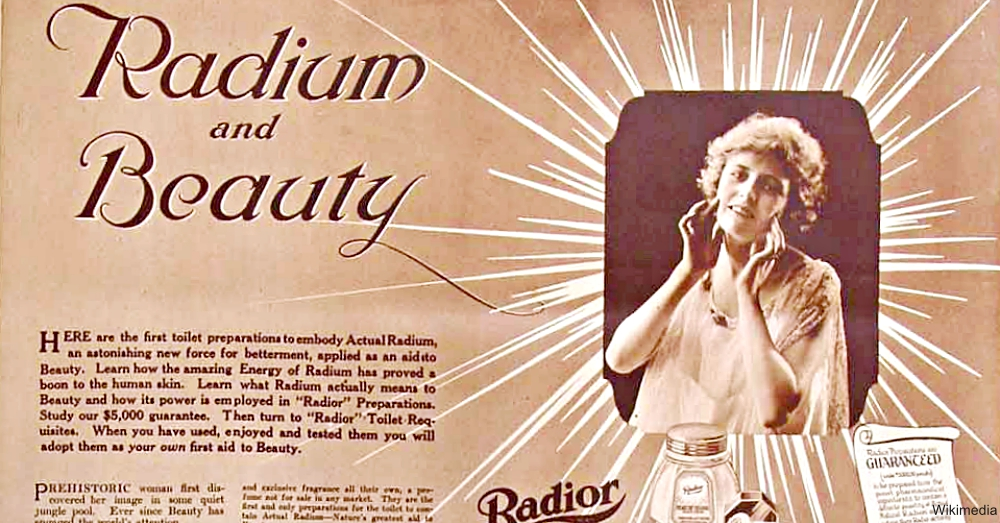

The second horseman, atop a red horse, represents War, and when one thinks of the worst wars of all, what likely comes to mind is the nuclear war. The dangers of radioactivity are well recognized now, and in some regards even demonized beyond its potential as an energy source, but when the phenomenon was first discovered all that was known was its eerie glow in the dark. In this time lies one of the most bizarre fads of the 1910s: the deadly radium craze.
Radium was, famously, first separated from uranium ore and named by Marie Curie. It most certainly killed her and her daughter Irene, though it would take years for this correlation to be understood. This discovery would kick off a years-long “radium fad” of putting the substance in everything from radium toothpaste to glowing radium ceramics to water enhanced with radium as a supposed energy drink. That said, the actual element was prohibitively expensive to obtain, and many snake oil products contained none of the sort — something that would be a blessing in disguise, as the real deal was far worse than any placebo.
The history of radium as a deadly product is tied irreparably with the case of the 1920s Radium Girls, painters for luminous watch dials and clock hands with radium inside. Wetting their brushes with their mouths and painting their lips with the glow-in-the-dark coating, dozens of women would find their bones becoming brittle, their teeth falling out and in one gruesome case, a patient having her entire jaw removed.
Media attention reached a high and, despite claims from higher-ups that radium was entirely safe, the evidence quickly became too substantial to deny. Of course, the history of humans and radioactivity was far from over, and these deaths served as a brief harbinger for the nuclear wars which now define its fraught history.